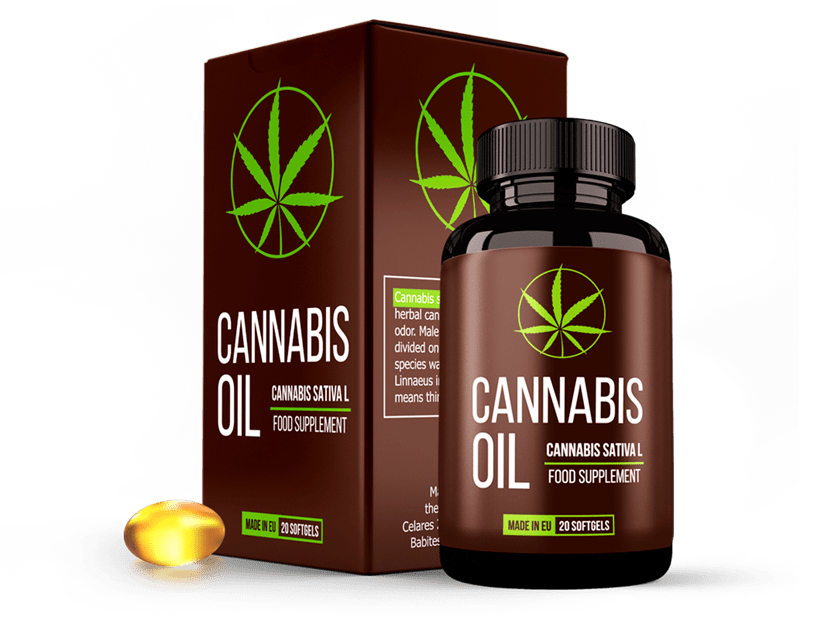

Антибиотиците и ректалния масаж вече не са необходими!
Швейцарски учени направиха пробив в лечението на хроничния простатит. Сега всеки мъж може да облекчи възпалението на простатата у дома за 14 дни!
Простатната жлеза е второто сърце на мъжа. За съжаление, поради отрицателни фактори, както и след 40-годишна възраст простатата се възпалява и уголемява. Според статистиката на Европейския институт по здравеопазване, бактериален или неинфекциозен простатит присъства в една или друга степен при 9 от 10 мъже.
Въпреки такава широко разпространена патология, все още няма адекватно и бързо лечение за нея. Наличните лекарства и физиотерапия са разработени преди 50-60 години. За съжаление те са не само нездравословни (тъй като основата на лечението са силни антибиотици), но и неефективни. Често (в повече от 93% от случаите) простатитът се повтаря отново след лечението. Поради това много лекари твърдят, че хроничният простатит е нелечим.
Швейцарските учени обаче са намерили начин, който може да подобри простатната жлеза и ще ви отърве от простатита НАПЪЛНО! Прави впечатление, че този метод още се е използвал от нашите предци. Учените само са го подобрили. С негова помощ можете да излекувате простатит на всеки етап и дори когато той вече е довел до аденом.
На среща с репортери откриването на швейцарски учени бе коментирано от известен уролог, андролог, лекар от най-високата категория с опит от над 30 години, професор Борислав Анастасов
Журналист: Г-н Анастасов, кажете ми с какво е опасен простатита? Необходимо ли е той да се лекува?
Борислав Анастасов: Простатитът трябва да се лекува. Простатната жлеза, която засяга тази патология, е изключително важен орган. В много отношения здравето на мъжа зависи от състоянието на простатата. Простатата изпълнява няколко жизненоважни функции: произвежда простатна секреция, контролира изтичането на урина, предотвратява проникването на инфекция от уретрата в горните пикочни пътища, произвежда простагландин Е и регулира психоемоционалното състояние на мъжете. Ето защо проблемите с този орган са изпълнени с развитието на много патологии: импотентност, възпаление на бъбреците и пикочния мехур, намаляване на имунитета, намаляване на производството на тестостерон и в резултат на това бързо стареене на организма, сърдечно-съдови заболявания и депресия.
Ако не се лекува, дори и при хроничен простатит, тоест когато няма остри симптоми, се появяват патологични промени в простатата, които винаги водят до аденом, а впоследствие и до рак на простатата. Когато това се случи, е само въпрос на време. При някои патологичната дегенерация на простатната тъкан протича бързо, при други – бавно.
В допълнение, простатитът има тенденция да се влошава. С всяко обостряне симптомите само ще се засилват. Какви са тези симптоми: възпаление на простатата, затруднено уриниране, болка в тестисите и долната част на гърба, парене и болка по време на уриниране, чести ходения до тоалетната.
Простатитът изобщо не е безобидно заболяване. Пренебрегвайки лечението, мъжът буквално съкращава живота си. Заболяването трябва да се лекува възможно най-рано.
Журналист: Защо традиционните методи на лечение дават нисък терапевтичен ефект?
Борислав Анастасов: Простатитът е изключително коварно заболяване и е изключително упорит. Така доскоро лекарите мислеха. Това се дължи на факта, че наличните в момента лекарства не са успели да излекуват простатата. Разработени преди много десетилетия, 90% от тях са насочени само към премахване на симптомите на заболяването, но не и към отстраняване на причините.
Тоест те са насочени към облекчаване на възпалението на простатата с цел улесняване на уринирането и премахване на болката, както и за борба с патогенната микрофлора, която се образува в секрецията на простатната жлеза. Да, това помага за известно време. Въпреки това е много трудно да се убият всички бактерии, до последно. Някои от тях винаги остават. И следователно простатитът в 93% от случаите се появява многократно още през следващата година след лечението.
За да се убие цялата патогенна микрофлора, са необходими силни антибиотици, но за да работят те, е необходимо да изтласкате самия патогенен агент от простатата. За тази цел се предписва ректален масаж, толкова необичан от много мъже.
Именно поради сложността на лечението мнозина се сблъскват с всички неудобства, които патологията внася в живота им. Но това е погрешно и, както казах, опасно. Новият метод ви позволява да лекувате простатит без ректален масаж и антибиотици и това е неговото огромно предимство. Може да се използва у дома самостоятелно.
Журналист: Разкажете ни по-подробно какво е откритието на швейцарските учени?
Борислав Анастасов: Те откриха начин, който не само елиминира симптомите на простатит, но и по-важното – причините за него. Ще се опитам да го обясня просто. Вижте, защо се появява простатита? Защо случаите на появата му при младежта са изолирани, а при хора над 40 години, до известна степен, почти всеки го има?
Всъщност това се знае отдавна. Причината за застоя и развитието на бактерии е влошаването на кръвоснабдяването на простатата. Факт е, че този орган е буквално обвит в мрежа от малки капиляри. С възрастта тези капиляри се запушват с холестерол, капилярната мрежа става по-бедна. В резултат на това се влошава кръвоснабдяването и подхранването на простатата. И този орган е много податлив на това, тъй като изпълнява много различни функции и се нуждае от голямо количество хранителни вещества. В резултат на недостатъчното кръвоснабдяване простатната жлеза започва да работи неправилно, което води до застой. Освен това имунитетът на жлезата отслабва и той престава да се справя с патогенни микроорганизми, които се размножават лавинообразно.

Развита система за кръвоснабдяване на простатната жлеза
Каква е заслугата на швейцарските учени? Те намериха начин да подобрят капилярната мрежа на простатата и да възстановят нормалното кръвоснабдяване на жлезата. Учените откриха, че холестеролните отлагания в тази част на съдовете добре унищожават Омега ненаситените мастни киселини (Омега-3, Омега-6, Омега-9) в съотношение 1:3:10. Освен това учените са открили растение, в което тези киселини са в правилното съотношение. Оказа се такова растение като канабис, или по-скоро не самото растение – а неговите семена. Всъщност семената на канабис са единственият натурален продукт, в който омега ненаситените мастни киселини са в правилното съотношение.
Учените се сдобиха с високо концентрирано масло от семена на канабис и проведоха клинични изпитвания в Женевския институт по урология. Общо около 500 доброволци, страдащи от хроничен простатит, участваха в тях. Искам да ви покажа техните резултати, те са просто невероятни!
Резултати от изследванията:
- Пълно излекуване на простатит – 96% от изследваните
- Възпалението утихва, уринирането се връща към нормалното – 100% от изследваните
- Повишени нива на тестостерон – 87% от изследваните
- Възстановена здрава потентност – 91% от изследваните
- Болки в перинеума и уринирането са преминали – 99% от изследваните
- Липса на зависимост и странични ефекти – 100% от изследваните
Както можете да видите, процентът на напълно елиминиран простатит е много висок. В сравнение с конвенционалното лечение, третирането с масло CBD е 17 пъти по-ефективно. В същото време самото масло е напълно натурално и затова не само не вреди на организма, а напротив, лекува го. Почиства кръвоносните съдове в целият организъм. Това е истински пробив в лечението на простатит и възстановяване на потентността.
Журналист: Ще се продава ли силно концентрирано CBD в капсули масло в европейските аптеки? Кога ще се появи и на каква цена?
Борислав Анастасов: Според думите на производителя поставката на капсулите по аптечните мрежи ще започне не по-рано от 2022 година. Това се дължи на факта, че маслото от канабис е доста дефицитен продукт. Днес конопените полета, от които се произвежда масло, на практика отсъстват в Европа.
КАПСУЛИТЕ
Засега капсулите могат да се поръчат на официалния сайт на производителя.
Относно цената... В момента тя е минимална, тъй като силно концентрираното масло от канабис се продава от производителя, заобикаляйки посредниците. Следователно този метод за лечение на простатит е достъпен за всички. Самото масло може да се приема дори без лекарско предписание.
Единственото нещо, което си струва да се помни е, че канабисовото масло в капсули се продава в ограничени количества, а броят на приложенията за него се увеличава ежедневно експоненциално, тъй като все повече и повече мъже научават за неговите прекрасни свойства. Ето защо бих препоръчал на всеки да остави заявление за масло възможно най-рано, докато то все още е на разположение.
Внимание:
- Канабисовото масло елиминира възпалението в простатата.
- Засилва сексуалното желание веднага след приемане.
- Нормализира уринирането.
- Възстановява естествената потентност.
- Повишава жизнения тонус.
РЕЗУЛТАТИ НА ЧИТАТЕЛИ

"Удивително лекарство. Страдах от простатит повече от 10 години. Не можех да спя нормално – непрекъснато имаше позиви към тоалетната. Изобщо не се говореше за секс – болките бяха такива, че просто не издържах. Страдахме и аз, и жена ми.
Успях да опитам много лекарства за простатит, но канабисовото масло надхвърли всичките ми очаквания. Не само изчезнаха проблемите с болката и уринирането, но и се появи интерес към противоположния пол, който започна да избледнява с възрастта. Това средство спаси здравето и личния ми живот! Съветвам всички!"
Борис Георгиев
63 години

"По съвет на лекуващия лекар реших да изпробвам , без да се надявам на нищо, тъй като вече бях отчаян да намеря ефективно лекарство срещу простатит.
Въпреки това, за моя изненада и голяма радост, седмица след началото на курса почувствах значителни подобрения – болката и възпалението изчезнаха. В края на курса потентността беше възстановена и дори не си спомнях болките и дискомфорта. Просто вълшебно средство."
Даниел Станиславов
69 години
Димитър М.
Благодаря. Интересно. Поръчах маслото. Простатит вече не се търпи!
Любослав П.
Също поръчах. Вече чух от другаде, че помага при простатит и импотентност. Не знаех къде да го купя. Благодаря за връзката!
Димитър Ф.
А аз съм от тези, които вече успяха да опитат. Мина добре. Спрях да тичам често до тоалетната. Болката утихна. Потенцията стана по-твърда. Всичко ми хареса. И всичко това без антибиотици и масаж!
Михаил Б.
Потвърждавам! Средството е отлично. Лекувах простатит в продължение на 2 години, не можа да се излекува. Като започнах да приемам масло, простатитът премина след седмица и половина. Препоръчвам го на всички!
Димитър С.
Също поръчах. Трябва да се опита. Вече се уморих от лечението на простатит.
Даниел М.
Имам хроничен простатит от 38-годишна възраст. Сега съм на 41 години. През това време го лекувах два пъти, когато е имало тежки обостряния. Последният път лекарите едва спасиха. Казаха още малко и простатитът щеше да премине в рак на простатата. Затова съветвам всички, които имат простатит, да се отърват от него възможно най-скоро. Това е много опасна болка
Емил Х.
Прочетох за маслото в посочения сайт. Впечатляващо! Оставих поръчка.
Иван Д.
Поръчах. 68 години. Простатит в продължение на 3 години. Съществува риск от аденом на простатата. Миналия месец отидох за електронен ректален масаж на простатата – няма да пожелаеш на врага, аз едва минах курс 2 седмици, но в крайна сметка се оказа нищо.
Калина К.
Необходимо е мъжа ми да поръчам такова масло. Простатит вече 5 години сигурно. Потенции сега е въобще никак. Той е само на 61 години
Иван Г.
Благодаря!
Александър Х.
Средството е отлично!!! Простатитът преминава!! Препоръчвам го на всички, докато все още е налично. Чувствам се отлично, всички симптоми изчезнаха за няколко дни. Нищо не помогна толкова добре.
Борис С.
– най-доброто средство от всички! Използвах го преди около 3 месеца. Простатитът е преминал напълно! Преди това минаха няколко години, заради него пенисът беше зле и бързо приключвах. Сега всичко се върна към нормалното!
Красимир С.
Успях да поръчам
Денис К.
Трети ден го приемам. Става все по-добре. Благодаря!
Вие можете да си поръчате капсулите за повишаване на потенцията на официалния сайт
© Copyright. Всички права запазени.